Show other papers
A Review of Galois Qudits
Authors: Adam Wills
Type: theory · Category: quantum information and computing · PDF: https://arxiv.org/pdf/2605.18981v1
Analysis basis: full PDF text, analyzed in chunks
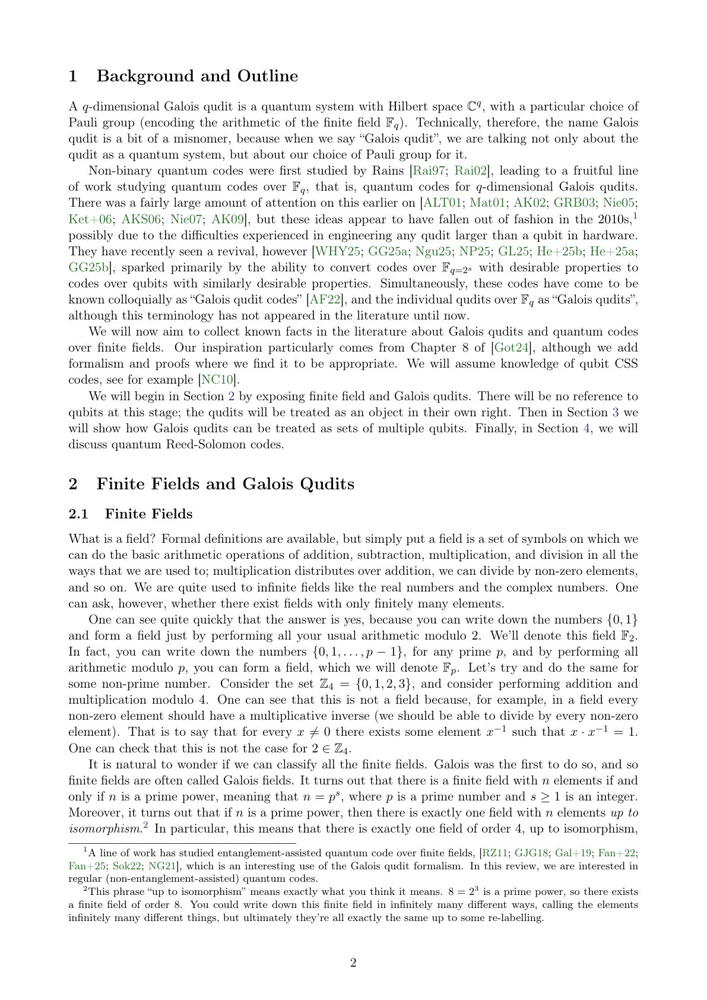
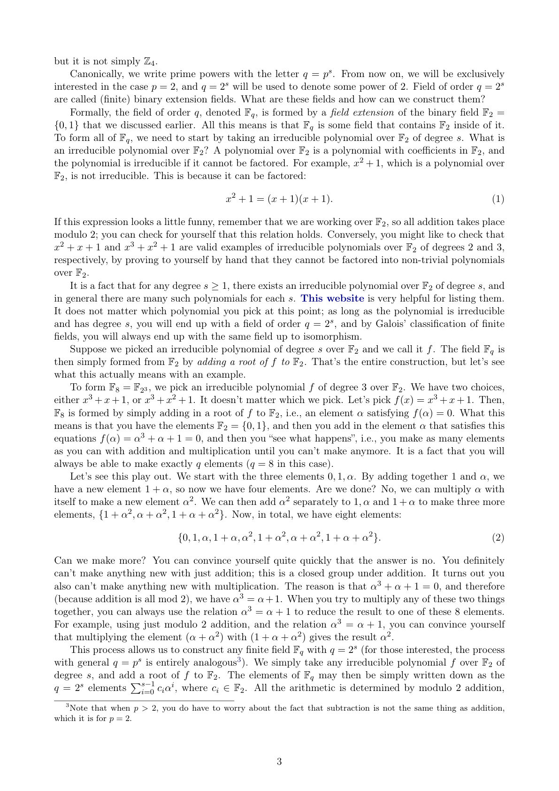
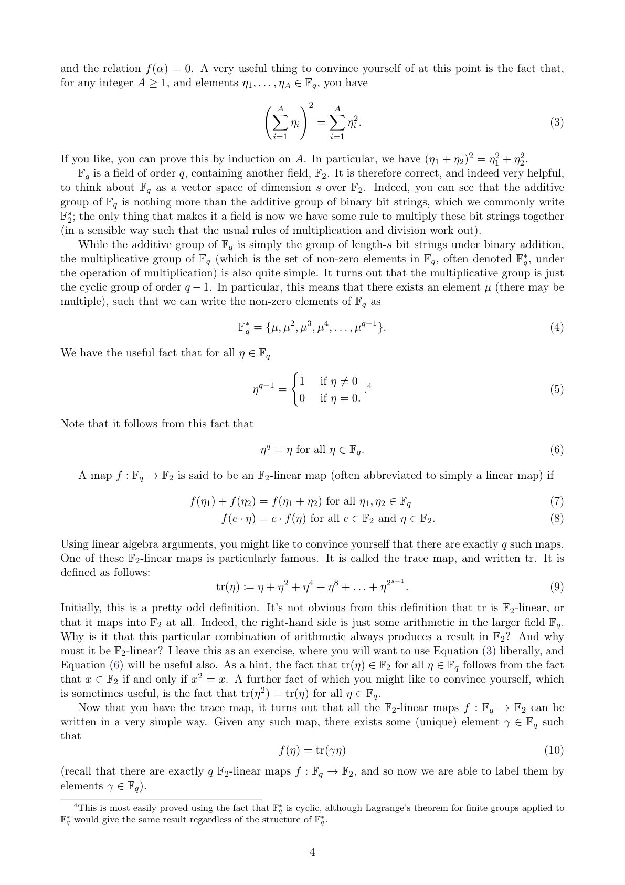
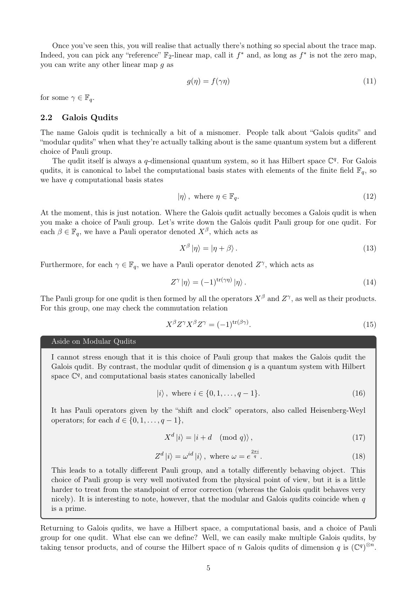
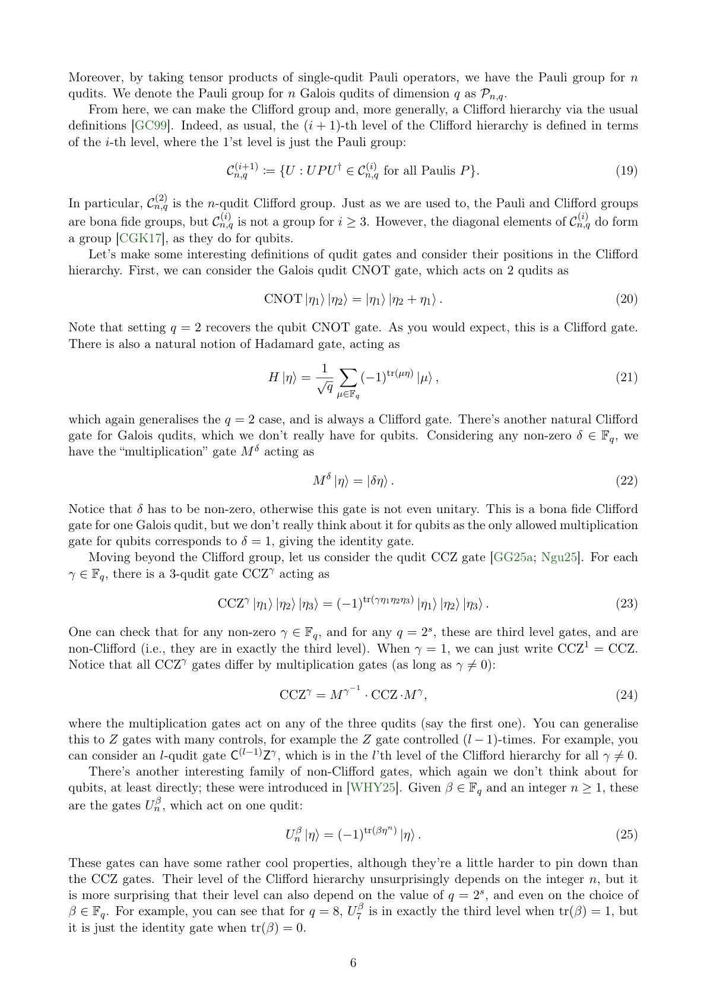
Summary. This review provides a formal mathematical foundation for Galois qudits, showing that these higher-dimensional systems can be treated as collections of qubits. This equivalence allows researchers to use the powerful algebraic tools of finite fields to design advanced quantum error-correcting codes, such as Quantum Reed-Solomon codes, using existing qubit-based hardware.
Why it may be interesting. not directly relevant
Detailed structure
Main problem. The paper aims to formalize the mathematical framework of Galois qudits and demonstrate their utility in constructing and mapping quantum error-correcting codes.
Main result. The review establishes a formal isomorphism between the Pauli groups, Clifford hierarchies, and CSS codes of a single Galois qudit (dimension $q=2^s$) and a collection of $s$ qubits, specifically demonstrating how to construct Quantum Reed-Solomon codes.
Method. The author uses finite field theory over binary extension fields to define the Galois Pauli group and employs basis-dependent linear isomorphisms to map qudit operations and stabilizer tableaux to qubit-based operations.
Model / system. The system consists of $q$-dimensional quantum systems (Galois qudits) where the Pauli group encodes the arithmetic of a finite field $\mathbb{F}_q$, specifically focusing on the case $q=2^s$.
Key observables. Syndrome components (X and Z syndromes), stabilizer measurements, and error weights.
Important parameters / regimes. Dimension $q=2^s$, code parameters $(n, k, d)$, and the Clifford hierarchy level $k$.
Assumptions / limitations. The review is restricted to binary extension fields ($p=2$), regular (non-entanglement-assisted) stabilizer codes, and $\mathbb{F}_q$-linear stabilizer spaces.
Paper structure. The paper begins by defining Galois qudits and their Clifford hierarchy, moves to describing stabilizer tableaux and measurements, establishes the mathematical equivalence between qudits and qubits, proves the equivalence of CSS codes under this mapping, and concludes with the construction of Quantum Reed-Solomon codes.
Abstract
Galois qudits are $q$-dimensional quantum systems whose choice of Pauli group encodes the arithmetic of some finite field $\mathbb{F}_q$. They differ from the more familiar modular qudit, which are the same quantum system but whose choice of Pauli group are the clock and shift operators, which encode the arithmetic of integer addition and multiplication modulo $q$. Galois qudits are a useful mathematical construct that allow us to leverage the mathematical tools that are native to the larger qudit while only physically building smaller qudits. In particular, a Galois qudit of dimension $q = 2^s$ is exactly the same thing as a collection of $s$ qubits, not only in its Hilbert space, but also in its Pauli group, and Clifford hierarchy. This formalism has found a lot of utility recently in constructing quantum error-correcting codes over qubits with useful properties. In this review, we build on existing literature to collect and formalise facts and proofs about Galois qudits over binary extension fields. We define them and their Clifford hierarchies, describe what it means to measure their Pauli operators, describe their stabiliser tableaux, formally define qudit-to-qubit mappings, and finally describe quantum Reed-Solomon codes.
Accelerated "on-the-fly" coupled-cluster path-integral molecular dynamics: Impact of nuclear quantum effects on an asymmetric proton
Authors: Thomas Spura, Hossam Elgabarty, Thomas D. Kühne
Type: theory · Category: numerical methods · PDF: https://arxiv.org/pdf/2605.19858v1
Analysis basis: full PDF text, analyzed in chunks
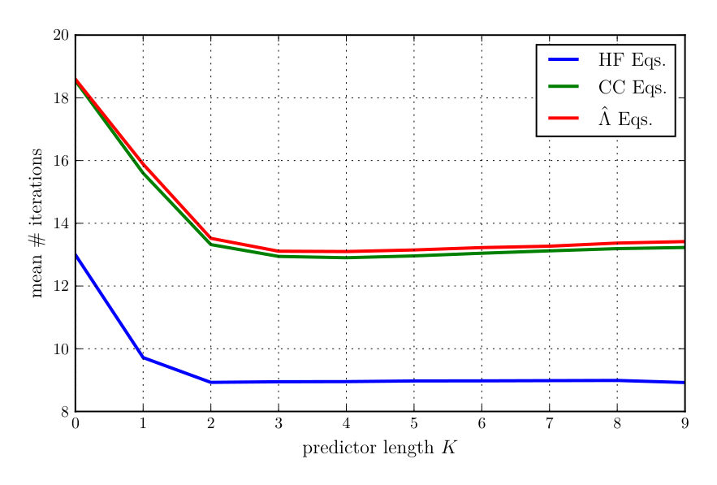
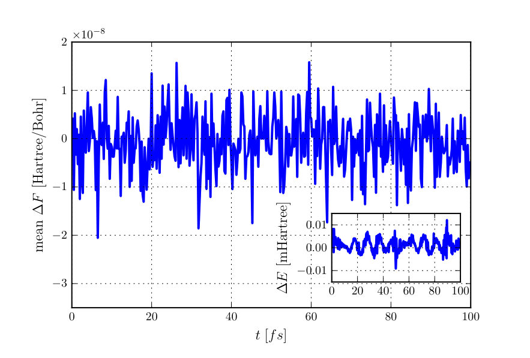
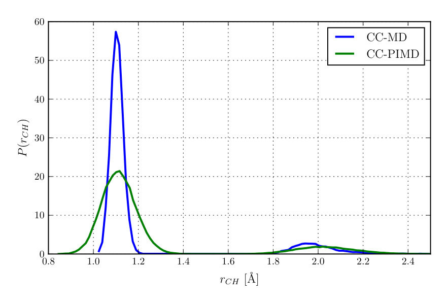
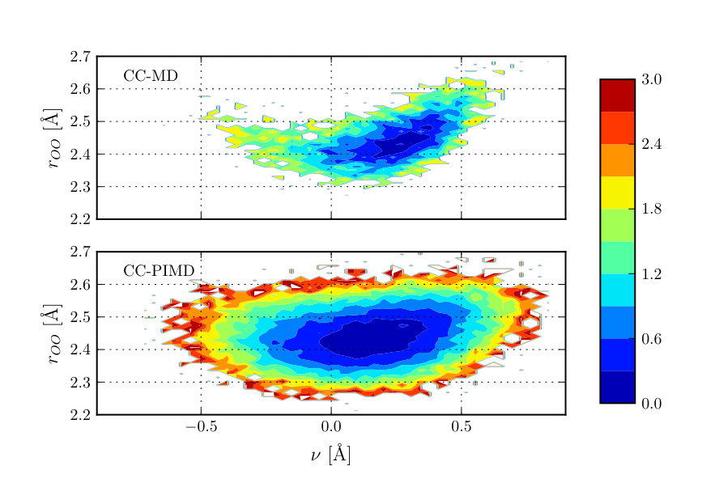
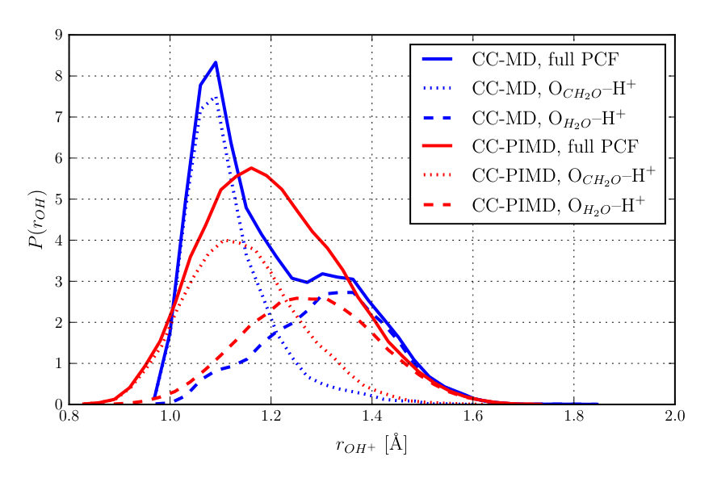
Summary. The authors present a new, efficient numerical method for simulating molecular systems where both electron correlation and nuclear quantum effects must be treated accurately. By applying this to an asymmetric hydrogen bond, they demonstrate that neglecting either effect leads to incorrect predictions of proton positioning and NMR observables.
Why it may be interesting. not directly relevant
Detailed structure
Main problem. The high computational cost of performing 'on-the-fly' coupled-cluster molecular dynamics while simultaneously accounting for both electron correlation and nuclear quantum effects.
Main result. The development of an accelerated CC-PIMD method that makes correlated simulations feasible, revealing that electron correlation and nuclear quantum effects are comparable in magnitude and can act in opposite directions on proton-transfer coordinates.
Method. An accelerated 'on-the-fly' coupled-cluster path-integral molecular dynamics (PIMD) method using quantum ring-polymer contraction (qRPC), second-generation Car-Parrinello-like dynamics, and amplitude extrapolation.
Model / system. An asymmetric hydrogen bond involving a proton shared between a water molecule and a formaldehyde molecule.
Key observables. Proton-transfer reaction coordinate, covalent bond-length distributions, nuclear magnetic shielding tensors (isotropic shielding and anisotropy), and partial pair correlation functions.
Important parameters / regimes. Temperature of 300 K, 32 ring-polymer beads, and the Kelvin energy scale.
Assumptions / limitations. The method uses the CCSD approximation (truncation of excitations) and relies on a specific combination of three acceleration layers to maintain feasibility.
Figures summary. Figure 1 shows the reduction in iterations via predictors; Figure 6 shows isotropic shielding vs. reaction coordinate; Figure 7 shows the relationship between shielding and bond length; Figure 8 shows the decomposition of NMR response due to NQEs and correlation; Figure 9 compares NQE-induced shifts at HF and CC levels.
Paper structure. The paper introduces the computational challenge, details the three-layer acceleration method (qRPC, CP2G, and amplitude extrapolation), applies the method to an asymmetric hydrogen bond, analyzes the structural and NMR consequences of nuclear quantum effects, and discusses the interplay between correlation and quantum nuclear motion.
Abstract
We present an accelerated ``on-the-fly'' coupled-cluster path-integral molecular dynamics (PIMD) method for finite-temperature simulations in which electron correlation and nuclear quantum effects are treated simultaneously. The approach is based on our quantum ring-polymer contraction (qRPC) technique, in which the inexpensive Hartree-Fock potential is evaluated on the full ring-polymer, while the expensive coupled-cluster correction is evaluated on the centroid only. This qRPC decomposition is combined with a second-generation Car-Parrinello-like dynamics of the Hartree-Fock reference and a basis-consistent extrapolation of the coupled-cluster and de-excitation amplitudes. The combination of all three acceleration layers is essential for making correlated PIMD calculations feasible. We apply the method to a proton shared by water and formaldehyde. Relative to classical nuclei, nuclear quantum effects broaden covalent X--H bond-length distributions, reduce the bias of the shared proton toward formaldehyde, and shift the mean proton-transfer coordinate from 0.206 to 0.135A. The probability of finding the proton closer to formaldehyde decreases from 81.7$\%$ to 61.1$\%$. The corresponding nuclear magnetic shielding tensors show that electron correlation and nuclear quantum effects are of comparable magnitude and can act in opposite directions. These results demonstrate that predictive simulations of asymmetric hydrogen bonds require a simultaneous treatment of correlated electronic structure and nuclear quantum fluctuations.
Atomistic Modeling of Chemical Disorder in Materials: Bridging Classical Methods and AI-Assisted Approaches
Authors: Jiayu Peng, Peichen Zhong
Type: theory · Category: disordered systems and neural networks · PDF: https://arxiv.org/pdf/2605.19124v1
Analysis basis: full PDF text, analyzed in chunks
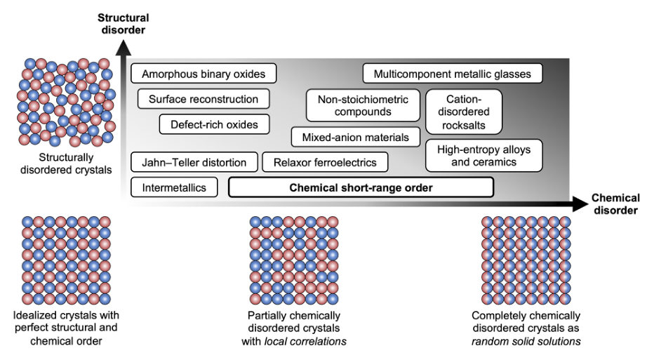
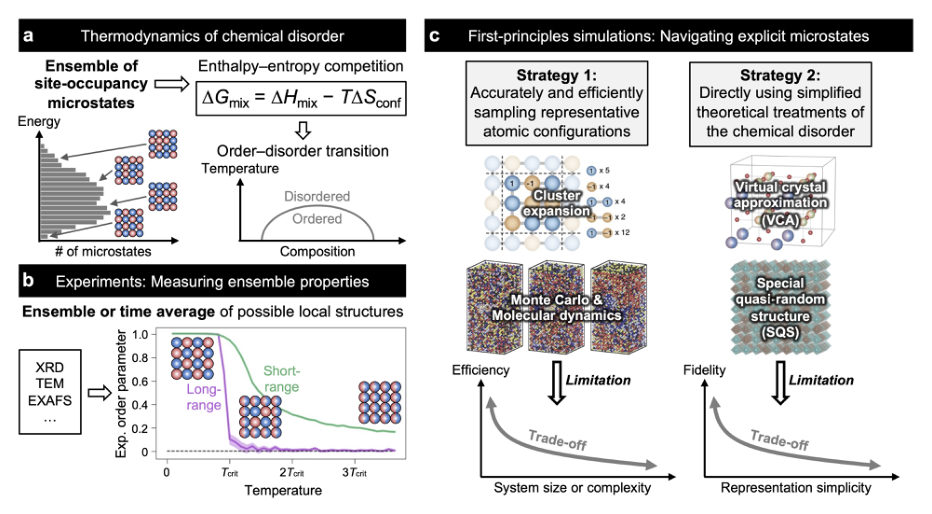
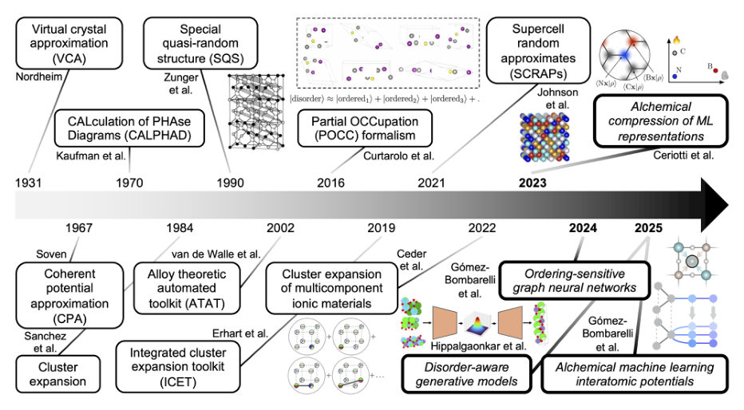
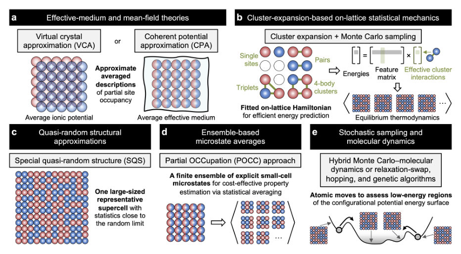
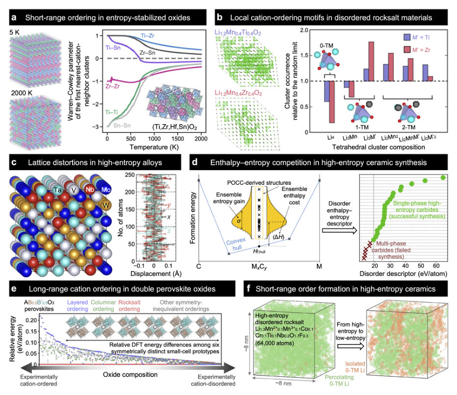
Summary. This review addresses the fundamental mismatch between how chemical disorder is measured experimentally and how it is modeled in simulations. It outlines how AI can transform disorder from a modeling obstacle into a controllable variable for materials discovery. The authors propose a transition toward 'disorder-native AI' that can handle complex, ensemble-averaged configurations.
Why it may be interesting. not directly relevant
Detailed structure
Main problem. The 'representation gap' between experimental observations of ensemble-averaged chemical disorder and the requirement for explicit, discrete configurations in atomistic and AI-driven simulations.
Main result. The paper proposes a roadmap toward 'disorder-native AI,' where machine learning is used to bridge the gap between averaged experimental data and atomistic microstates by acting as both an accelerator for classical methods and an enabler of new disorder-aware representations.
Method. A review of classical statistical mechanics (Mean-field theories, Cluster Expansion, Monte Carlo) and modern AI-driven approaches (Machine Learning Interatomic Potentials, Generative Models, and Graph Neural Networks).
Model / system. Chemically disordered solids, including high-entropy alloys, ceramics, oxides, and solid electrolytes, where elements occupy crystallographic sites with varying probabilities.
Key observables. Phase stability, electronic structure, site occupancy, Warren-Cowley parameters, and configurational entropy.
Important parameters / regimes. Chemical short-range order (SRO), long-range order (LRO), enthalpy of mixing, and configurational temperature.
Assumptions / limitations. The review focuses on chemical (occupational) disorder rather than structural (positional) disorder, though it acknowledges their coupling.
Figures summary. Figure 1 shows the continuum of chemical and structural disorder; Figure 2 illustrates the competition between enthalpy and entropy and the experimental-simulation gap; Figure 3 provides a timeline of computational method evolution; Figure 4 illustrates effective-medium approximations.
Paper structure. The paper identifies the representation gap, reviews classical statistical mechanics methods (from mean-field to cluster expansion), evaluates AI as an accelerator for these methods, proposes AI as an enabler for disorder-native discovery, and concludes with a roadmap for future research.
Abstract
Chemical disorder, originating from the mixed occupation of crystallographic sites by multiple elements, is widespread in alloys, ceramics, and compositionally complex materials, where short- and long-range orderings can strongly influence properties. A central obstacle is the representation gap between experiments and simulations: experiments often report disorder as partial occupancies and ensemble-averaged behaviors, whereas atomistic simulations and AI workflows usually require fully specified configurations. Tackling this gap requires computational methods that convert averaged disorder descriptions into representative configurational ensembles while balancing cost, bias, and fidelity. This challenge has become more urgent in AI-driven computational discovery, where ignoring disorder may cause AI workflows to misrank stability, misjudge novelty, and misdirect experiments with too-idealized representations. This Review highlights how classical and AI-driven methods can bridge this representation gap. We assess the strengths and limitations of approaches spanning mean-field theories, cluster expansion, quasi-random approximations, Monte Carlo, and emerging schemes powered by universal interatomic potentials and generative models. We further highlight how AI can accelerate classical computational schemes by lowering the cost of microstate evaluation, configurational exploration, and atomistic-to-thermodynamic closure. We also emphasize how AI can enable disorder-native capabilities, including workflow triage, ordering-sensitive and alchemical representations, generative models of disordered structures and distributions, and kinetics-aware disorder prediction. Together, this framework outlines a practical roadmap toward disorder-native AI, which can transform chemical disorder from a representational obstacle into a controllable variable for realistic AI-accelerated materials discovery.
Band Structure and topology of a periodically deformed Kitaev honeycomb model
Authors: Abdullah AlJishi, Ali AlSwaid, Moayad Ekhwan, Hocine Bahlouli, Raditya Weda Bomantara, Michael Vogl
Type: theory · Category: strongly correlated electrons · PDF: https://arxiv.org/pdf/2605.20181v1
Analysis basis: full PDF text, analyzed in chunks
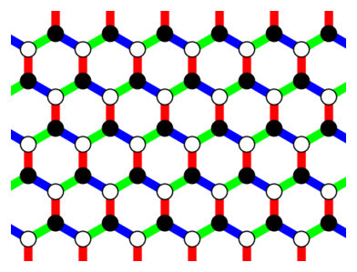
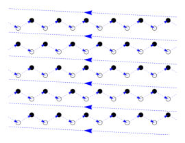
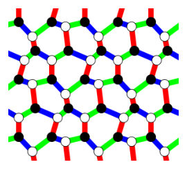
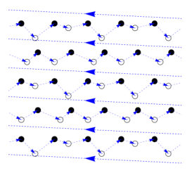
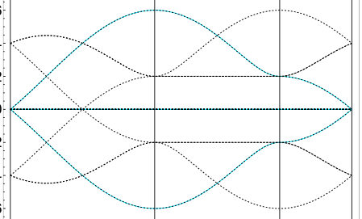
Summary. This paper explores how periodic lattice deformations can be used to engineer topological phases in the Kitaev honeycomb model. It demonstrates that the interplay between deformation and magnetic fields leads to complex topological transitions and new band features like flattening. The study also proposes a method to measure Chern numbers in the bulk using adiabatic pumping.
Why it may be interesting. not directly relevant
Detailed structure
Main problem. Investigating how periodic lattice deformations and magnetic fields combined affect the band structure and topological properties of the Kitaev honeycomb model.
Main result. Deformation induces new band gaps and can drive the system from a topologically trivial to a non-trivial phase when a magnetic field is present, alongside the discovery of multiple topological transitions and potential band flattening.
Method. The authors use a Majorana fermion representation and a specific Jordan-Wigner transformation to reduce the Hamiltonian to a quadratic form, followed by a perturbative approach for the magnetic field and Chern number calculations via Berry curvature integration.
Model / system. A Kitaev honeycomb model featuring spin-1/2 exchange interactions (Jx, Jy, Jz) subjected to a hexagonally symmetric, commensurate periodic deformation and an external magnetic field.
Key observables. Band structure, band gaps, Chern numbers, Berry curvature, and potential thermal Hall or Nernst-type responses.
Important parameters / regimes. Exchange couplings (Jx, Jy, Jz), deformation strength (t), magneto-elastic coupling (beta), and magnetic field strength (kappa).
Assumptions / limitations. The analysis focuses on the low-energy sector of the Hamiltonian, assumes a small deformation regime to preserve nearest-neighbor relations, and treats the magnetic field perturbatively.
Figures summary. The figures illustrate the Kitaev lattice structure, the Jordan-Wigner path, the applied deformation field, the enlarged unit cell, and various band structure comparisons showing gaps, crossings, and flatness.
Paper structure. The paper introduces the Kitaev model and deformation engineering, presents a simplified solution via Jordan-Wigner transformation, analyzes the deformed band structure, investigates topological transitions induced by magnetic fields, proposes bulk measurement methods via adiabatic pumping, and concludes with future directions.
Abstract
Motivated by the growing interest in spin liquids and topological phases, as well as the rise of deformation engineering, we study the combined effects of deformation and magnetic fields on the honeycomb Kitaev model. The Kitaev model, as one of the prototypical and exactly solvable spin liquid-hosting models, serves as a simple platform that demonstrates the rich physics one can expect at the intersection of deformation physics and quantum spin liquids. Our work builds on a simplified solution to the undeformed base model that we present. This simplified solution allows for a straightforward extension of our analysis to the deformed case. After incorporating periodic deformations into the Kitaev model (chosen for its similarity to moiré physics), we investigate the effects of a hexagonally symmetric deformation on the band structure. We find that deformation leads to a smaller Brillouin zone with new band gaps at the edges, indicating the potential for topological transitions. Finally, we introduce a magnetic field to break time-reversal symmetry and thereby allow for non-trivial topology. We find that, under specific parameter conditions, the magnetic field leads to multiple band-gap closings and openings. An investigation into topological properties reveals nontrivial Chern numbers and a plethora of topological transitions. Our results suggest possible thermal Hall or Nernst-type responses. We also suggest a potential bulk measurement approach for he Chern numbers and possible path to physical realization. Most importantly, our results serve as a demonstration of the rich phenomenology that can arise due to the interplay between deformation and spin-liquid physics.
Controlled expansion for correlated electrons with concentrated kinematics
Authors: Pavel A Nosov, Eslam Khalaf, Patrick Ledwith
Type: theory · Category: strongly correlated electrons · PDF: https://arxiv.org/pdf/2605.20171v1
Analysis basis: full PDF text, analyzed in chunks
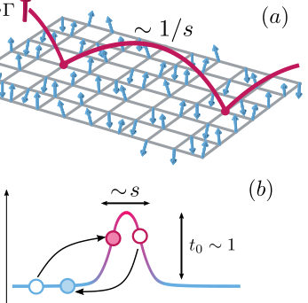
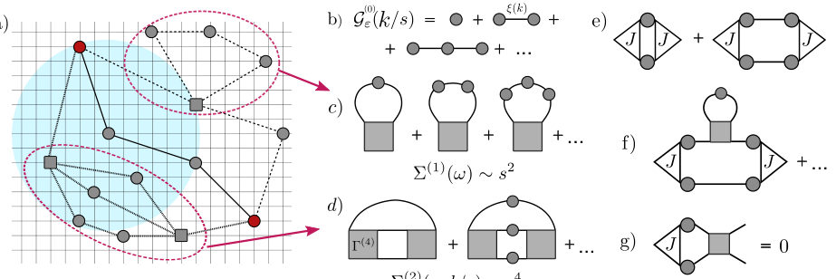
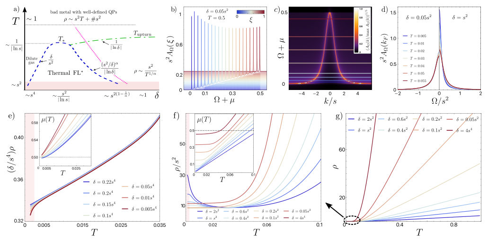
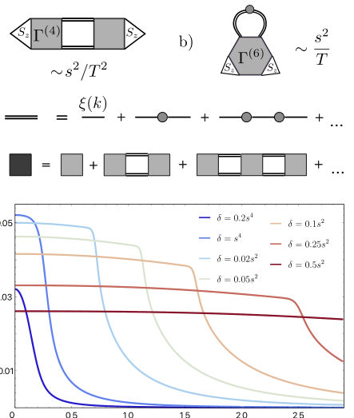
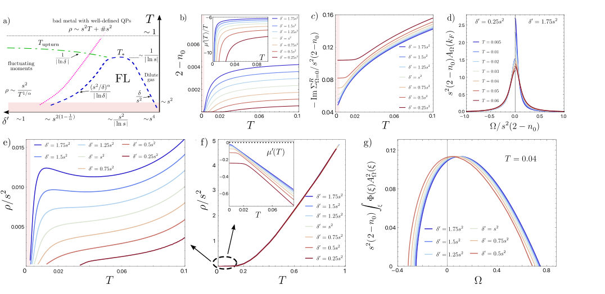
Summary. The paper introduces a new controlled expansion technique for studying 2D strongly correlated systems where physics is concentrated in small regions of momentum space. This method enables the analytical calculation of complex properties like T-linear resistivity and spectral broadening, providing a new tool for understanding narrow-band materials like moiré heterostructures.
Why it may be interesting. not directly relevant
Detailed structure
Main problem. Standard perturbative expansions for 2D strongly correlated systems fail because long, self-returning hopping paths cause non-analytic spectral broadening. There is a need for a systematic, controlled expansion that can analytically compute transport and response functions in systems with concentrated momentum-space kinematics.
Main result. The authors develop a controlled s^2 expansion that allows for the analytical computation of response functions, identifying regimes such as a high-temperature bad metal with T-linear resistivity and a thermal FL* state. They also demonstrate the method's applicability to correlated-hopping models and Chern band models.
Method. A systematic expansion in a small parameter s^2, which measures the momentum-space area of concentrated kinematics. The method uses a dual-fermion-like approach, cumulant expansions, and diagrammatic resummation of self-avoiding paths.
Model / system. A general class of 2D lattice models with strong local interactions and concentrated kinematics, including the Hubbard model with concentrated dispersion, correlated-hopping models, and Chern band models motivated by twisted bilayer graphene.
Key observables. Spectral broadening, DC transport/resistivity, spin susceptibility, single-particle Green's functions, and electron-trion spectral functions.
Important parameters / regimes. Small parameter s^2 (kinematic concentration), temperature T, Hubbard interaction U, and bandwidth t0.
Assumptions / limitations. The expansion assumes s^2 << 1, where long, self-avoiding tunneling paths dominate over paths revisiting the same site; some derivations specifically assume the half-filling regime.
Figures summary. Figure 1 shows cartoons of particle propagation near the Gamma point and dispersion variation; Figure 2 depicts diagrammatic contributions to the current vertex.
Paper structure. The paper introduces the s^2 expansion and its real-space interpretation, establishes the diagrammatic rules and scaling laws, applies the method to the Hubbard model (identifying bad metal and thermal FL* regimes), extends it to correlated-hopping and Chern band models, and concludes with generalizations.
Abstract
We introduce a systematic expansion tailored to systems with strong local interactions and capable of computing response functions, including finite DC transport, analytically. The expansion is controlled by a small parameter $s^2$ that measures the area of the momentum space region where kinematics of the theory is concentrated. In real space, this corresponds to single-particle or correlated hopping terms with amplitudes that decay over a length scale $1/s$ and scale in magnitude as $s^2$ in two dimensions. In the limit $s^2\ll 1$, long, self-avoiding tunneling paths dominate over paths revisiting the same site. This enables systematic controlled calculations of various physical quantities. We illustrate the method with three applications. (i) A Hubbard model with concentrated dispersion: we analytically obtain spectral broadening which scales as $s^2$ and identify a high-temperature bad metal with $T$-linear resistivity coexisting with parametrically long-lived quasiparticles, as well as an intermediate-temperature "thermal FL*" with a small hole pocket that coexists with thermally disordered fluctuating local moments, all within a single controlled framework. (ii) A correlated-hopping model with interesting electron-trion dynamics. (iii) A model of Chern bands with concentrated Berry curvature, motivated by twisted bilayer graphene, which realizes a Mott semimetal where we compute the broadening for the electron and trion spectral functions. At the end, we discuss how our approach paves the way to addressing various challenging questions in strongly correlated systems and outline its various generalizations.
Deconfined Boundary Phase Transition of a Quantum Critical Heisenberg Model
Authors: Chengxiang Ding, Long Zhang
Type: theory · Category: strongly correlated electrons · PDF: https://arxiv.org/pdf/2605.19011v1
Analysis basis: full PDF text, analyzed in chunks
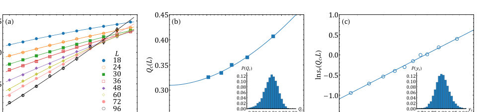
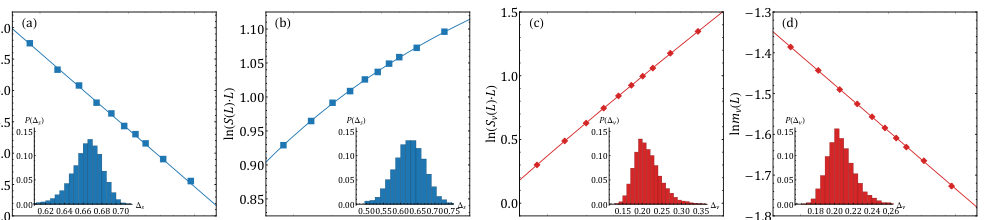
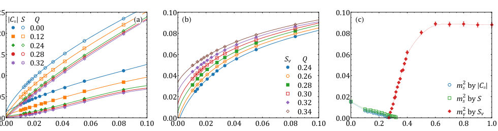
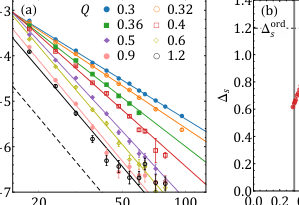
Summary. This paper studies a boundary phase transition in a 2D quantum critical Heisenberg model. It discovers a continuous transition from antiferromagnetic to valence-bond solid order at a specific critical value of a multi-spin interaction term. The results highlight how bulk criticality can mediate interactions that stabilize boundary order.
Why it may be interesting. This paper is interesting for many-body dynamics researchers because it explores how topological terms and long-range effective interactions can stabilize new phases of matter at a boundary, providing insights into deconfined criticality.
Detailed structure
Main problem. The study investigates the nature of boundary phase transitions in a (2+1)-dimensional quantum critical Heisenberg model, specifically looking for a deconfined transition between antiferromagnetic and valence-bond solid order.
Main result. The authors identify a continuous boundary transition at Qc = 0.310(11) from AF to VBS order, driven by the synergy between topological theta-terms and quasi-long-range effective interactions.
Method. Large-scale projective quantum Monte Carlo (QMC) simulations in the valence bond basis, utilizing finite-size scaling and resampling procedures for error estimation.
Model / system. A (2+1)D quantum critical Heisenberg model on a columnar dimerized square lattice with a dangling spin chain at an open boundary, featuring a multi-spin Q-term as a tuning parameter.
Key observables. Binder ratio (Rv), VBS order parameter (v), AF order parameter (staggered spin correlations), scaling dimensions (Ds, Dv), and static structure factors (S(L), Sv(L)).
Important parameters / regimes. Tuning parameter Q, critical point Qc = 0.310(11), critical exponent ys = 0.81(4), and lattice sizes L up to 96.
Assumptions / limitations. The bulk of the system is assumed to be maintained at its quantum critical point (J'/J approx 1.90951).
Figures summary. Figure 2(b,c) displays the Binder ratio and its slope used to determine the critical point Qc.
Paper structure. The paper introduces the model and the boundary transition problem, describes the QMC methodology, presents the identification of the AF and VBS phases, details the numerical extraction of critical exponents, and concludes with a discussion on the failure of extraordinary-log scaling forms.
Abstract
We investigate the boundary phases of a (2+1)-dimensional quantum critical Heisenberg model with a dangling spin chain. By introducing a multispin $Q$-term along the boundary, we drive a continuous boundary transition from an antiferromagnetic (AF) order to a valence-bond solid (VBS) order. Using large-scale quantum Monte Carlo simulations, we locate the critical point at $Q_{c}=0.310(11)$, and obtain the critical exponents at $Q_{c}$, including $y_{s}=0.81(4)$ and the scaling dimensions of AF and VBS order parameters $Δ_{s}=0.660(15)$ and $Δ_{v}=0.204(14)$. The weak long-range AF order for $Q
Geometric curvature driven by many-body collective fluctuations
Authors: Alejandro S. Miñarro, Gervasi Herranz
Type: theory · Category: strongly correlated electrons · PDF: https://arxiv.org/pdf/2605.19820v1
Analysis basis: full PDF text, analyzed in chunks
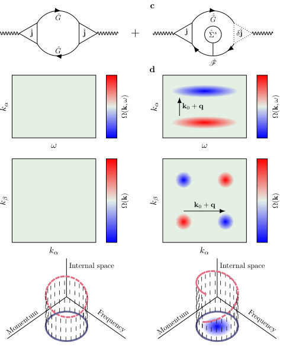
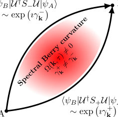
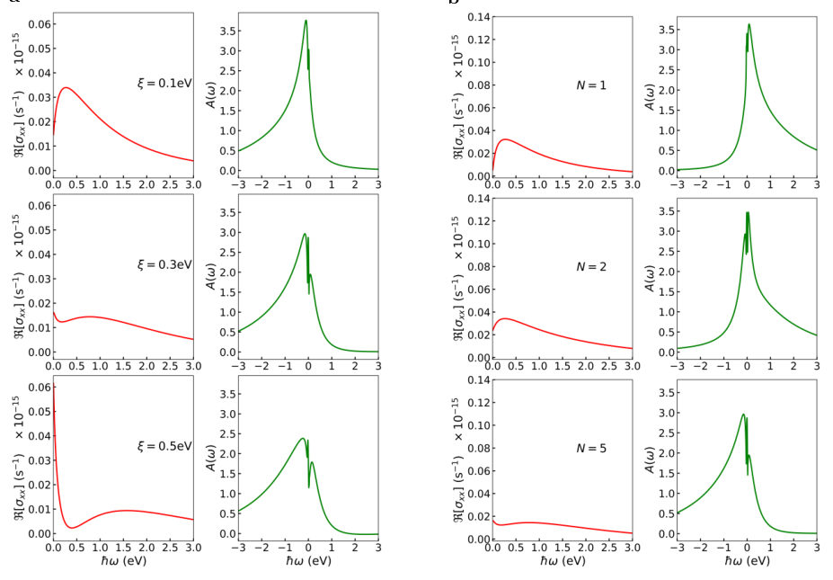
Summary. This paper demonstrates that many-body collective fluctuations can dynamically generate a spectral Berry curvature even in systems where the bare band geometry is symmetric. By utilizing time-nonlocal interactions and non-commutative operators, these fluctuations create a detectable antisymmetric signal in inelastic scattering. The authors propose that RIXS is a key experimental tool to probe this emergent quantum geometry.
Why it may be interesting. It provides a deep look into how many-body dynamics and non-commutative fluctuation operators can generate emergent gauge structures (curvature) that are absent in single-particle band theory.
Detailed structure
Main problem. Determining whether many-body collective fluctuations can generate a detectable, dynamical geometric curvature in systems that possess parity and time-reversal symmetry.
Main result. The authors show that coupling to collective modes introduces time-nonlocal interactions and non-commutative properties that generate a finite spectral Berry curvature, which can be experimentally distinguished from bare band contributions via RIXS.
Method. The study uses the Matsubara formalism, Green's functions, and a diagrammatic expansion (second-order Born approximation) to analyze the antisymmetric part of the quantum geometric tensor and the RIXS scattering function.
Model / system. A $t_{2g}$ manifold model for heavy transition metal compounds (e.g., 4d-5d systems) featuring strong spin-orbit coupling, Jahn-Teller distortions, and electron-electron interactions.
Key observables. Spectral Berry curvature $\Omega(k, \omega)$, antisymmetric susceptibility $\chi_{as}$, and the antisymmetric RIXS scattering function $\Pi_{as}$.
Important parameters / regimes. Orbital filling ($N=1, 2, 5$), spin-orbit coupling strength ($\xi$), Jahn-Teller mode energies ($\sim 5 ext{--}10$ meV), and momentum transfer ($q$).
Assumptions / limitations. The use of the second-order Born approximation, the ultrafast collision approximation for RIXS, and the assumption of $P-T$ symmetric systems.
Figures summary. Figure 1 illustrates the transition from bare to dressed vertices and the emergence of curvature hotspots; Figure 2 shows the origin of phase accumulation via spin ladder operators; Figure 3 displays conductivity and spectral weight changes; Figure 4 maps momentum-space curvature; Figures 7-9 detail the RIXS experimental setup and the filtering of the antisymmetric signal.
Paper structure. The paper begins by defining the quantum geometric tensor and the problem of vanishing curvature in $P-T$ symmetric systems, then develops a many-body framework involving vertex corrections and time-nonlocality, followed by a symmetry analysis of the susceptibility, and concludes with a proposal for detecting these effects using RIXS spectroscopy.
Abstract
Quantum geometry characterizes the variation of wavefunctions in momentum space through their overlaps and relative phases, providing a general framework for understanding many transport and optical properties. It is generally formulated in terms of interband matrix elements, which, entering the response functions, allow obtaining experimental access to the quantum geometric tensor. Recently, it has been emphasized that quantum geometry can also be interpreted in terms of quantum dipole fluctuations in the ground state driven by interband mixing. Here, we extend this picture to include contributions from many-body collective fluctuations, in which propagators and response vertices are dressed dynamically by the interaction with collective modes. Focusing on the Berry curvature, we show that contributions from collective fluctuations can be experimentally distinguished from bare band-geometric contributions, via specific antisymmetric channels in inelastic scattering spectra. We further identify the non-commutative properties of transverse quantum fluctuations as well as non-local-time interactions as the generators of this dynamical curvature in the susceptibility response.
Hidden weak-pairing superconductivity of non-interacting anyons obeying $\frac{1}{3}$ statistics
Authors: Zheng-Duo Fan, Ashvin Vishwanath, Zijian Wang
Type: theory · Category: strongly correlated electrons · PDF: https://arxiv.org/pdf/2605.19036v1
Analysis basis: full PDF text, analyzed in chunks
Summary. This paper proposes a new weak-pairing mechanism for superconductivity in anyon gases, specifically for those arising from doped fractional Chern insulators. By showing that statistical gauge field fluctuations can drive pairing, the authors resolve a long-standing conflict between theory and numerical results regarding the edge physics of these superconductors.
Why it may be interesting. not directly relevant
Detailed structure
Main problem. The paper aims to resolve the discrepancy between previous theoretical predictions (integer chiral central charge c- = -2) and recent numerical results (c- = -1/2) regarding the nature of superconductivity in doped fractional Chern insulators.
Main result. The authors identify a new 'hidden' weak-pairing superconducting phase where the statistical gauge field fluctuations provide the pairing glue, yielding a chiral central charge of c- = -1/2, which aligns with numerical observations.
Method. The study employs a flux-attachment construction, parton mean-field theory, and Chern-Simons-Landau-Ginzburg theory to map anyons to composite fermions and analyze the pairing symmetry and topological response.
Model / system. A non-interacting gas of charge-e/3 anyons with exchange statistics theta = -pi/3, which arises naturally in doped fractional Chern insulators at filling 1/3 or 2/3.
Key observables. Chiral central charge (c-), Hall conductance (sigma_xy), thermal Hall conductance, and pairing symmetry (f-if physical superconductor).
Important parameters / regimes. Exchange statistics (theta = -pi/3), filling factors (nu = 1/3, 2/3), and the distinction between strong-pairing and weak-pairing regimes.
Assumptions / limitations. The density distribution respects projective lattice translation symmetry, and the derivation assumes an emergent continuous rotation symmetry not present in the microscopic lattice.
Paper structure. The paper introduces the problem of anyon superconductivity, develops a flux-attachment construction to map anyons to composite fermions, analyzes the pairing mechanism via gauge field fluctuations, compares strong-pairing and weak-pairing regimes, and concludes by resolving the chiral central charge discrepancy and discussing generalizations.
Abstract
We show that a non-interacting gas of charge-$e/3$ anyons with exchange statistics $θ=-π/3$ can superconduct through a hidden weak-pairing mechanism. Such an anyon gas arises naturally in doped fractional Chern insulators at filling $1/3$ or $2/3$, where projective lattice translations enforce three degenerate anyon pockets. Exploiting this three-pocket structure, we develop a flux-attachment construction in which the average statistical flux vanishes, thereby mapping the problem to three species of composite fermions (CFs) in zero effective magnetic field. We show that the anyon statistics itself, encoded in statistical gauge field fluctuations, supplies the pairing glue and drives the CFs into a $p-\mathrm{i}p$ paired state, which corresponds to a $f-\mathrm{i}f$ physical superconductor. The CF strong-pairing phase is adiabatically connected to Laughlin's picture of anyon superconductivity, where charge-$e/3$ anyons bind into charge-$2e/3$ molecules, which then lead to superconductivity. By contrast, the more natural weak-pairing phase of CFs realizes a distinct superconducting phase - its edge is characterized by a chiral central charge $c_-=-1/2$, in contrast to the prediction of integer $c_-$ for the anyon superconductor based on Laughlin's picture, thereby resolving the discrepancy between previous theories and recent numerical results. Our theory provides a natural framework for understanding superconductivity near fractional Chern insulators, as observed in recent experiments. Finally, we discuss extensions of our theory that predict new chiral superconductors adjacent to FCIs at other fillings.
High-fidelity molecular quantum logic gates resilient to interaction fluctuation
Authors: Yan Lu, Xiao-Feng Shi
Type: theory · Category: other · PDF: https://arxiv.org/pdf/2605.19741v1
Analysis basis: full PDF text, analyzed in chunks
Summary. This paper proposes a new method for performing high-fidelity quantum logic gates using polar molecules in optical tweezers. By using a specific microwave pulse sequence, the gate becomes insensitive to the fluctuations in interaction strength caused by molecular motion. This allows for highly accurate and tunable gates even in realistic, non-zero temperature experimental conditions.
Why it may be interesting. It addresses a critical bottleneck in molecular quantum computing—the coupling between internal qubit states and external motional degrees of freedom—and provides a robust protocol for high-fidelity operations.
Detailed structure
Main problem. The accuracy of entangling gates in optically trapped polar molecules is limited by fluctuations in dipole-dipole interactions (DDI) caused by molecular motion in the traps.
Main result. The authors propose a high-fidelity, tunable controlled-phase gate that is resilient to 25% DDI fluctuations and maintains fidelity above 0.9999 even under significant motional excitation.
Method. The study uses an effective spin-echo sequence of two global microwave pi pulses and a motional-mode separation technique to analyze the quantum mechanical influence of axial motion using QuTiP simulations.
Model / system. The system consists of two polar molecules (e.g., NaCs) in optical tweezers, modeled as 1D harmonic oscillators with three internal states per molecule coupled via dipole-dipion interactions.
Key observables. Gate fidelity, gate infidelity, and the time spent in DDI-coupled states (td).
Important parameters / regimes. DDI strength variation (up to 25%), ratio of harmonic oscillator length to trap separation (l/L), and microwave Rabi frequency (Omega).
Assumptions / limitations. Radial motion is neglected due to small position spread; molecules are assumed to be in ground or low-lying motional states; the trap is modeled as a 1D harmonic oscillator.
Figures summary. Figure 1 shows the log-scale CZ gate infidelity versus DDI strength and the time spent in coupled states; Figure 2 shows gate infidelity across different l/L ratios and motional states.
Paper structure. The paper introduces the problem of DDI uncertainty, describes the proposed microwave-pulse gate protocol, presents the motional-mode separation technique, and evaluates gate performance against DDI fluctuations and thermal motional states.
Abstract
Optically trapped polar molecules are promising for quantum information processing, yet the accuracy of an entangling molecular gate is limited by the uncertainty of dipole-dipole interactions~(DDI) from the molecular motion in traps. We show that two $π$ pulses of global microwave excitation can yield a high-fidelity controlled-phase gate when assisted by two single-qubit gates. The gate is resilient to the uncertainty of DDI because it does not rely on populating DDI-coupled states. Further, the controlled phase is fully tunable by varying the relative phase of the two global microwave pulses, and, hence, the gate can find applications in a wide range of quantum algorithms involving quantum Fourier transform. Moreover, we introduce a motional-mode separation technique to quantum mechanically study the influence of the molecular motion, which shows that the gate fidelity can be over 0.9999 with typical experimental conditions.
Higher-order Weyl nodes driven by helical magnetic order in EuAgAs
Authors: Jian-Rui Soh, Ziming Zhu, Louis Withers, J. Alberto Rodríguez-Velamazán, Timur K. Kim, Oscar Fabelo, Anne Stunault, Daniil Yevtushynsky, Dharmalingam Prabhakaran, Shengyuan A. Yang, Andrew T. Boothroyd
Type: both · Category: strongly correlated electrons · PDF: https://arxiv.org/pdf/2605.19347v1
Analysis basis: full PDF text, analyzed in chunks
Summary. This paper identifies a complex transverse helical magnetic order in EuAgAs that undergoes two successive phase transitions. Using a combination of neutron scattering and DFT, the authors predict that this magnetic structure induces higher-order Weyl nodes, establishing the material as a platform for studying the interplay between magnetism and topology.
Why it may be interesting. not directly relevant
Detailed structure
Main problem. The study aims to determine the elusive magnetic ground state of the hexagonal pnictide EuAgAs and understand how its helical magnetic order influences the electronic band structure, specifically the potential emergence of higher-order Weyl nodes.
Main result. The researchers identified a non-collinear, transverse helical magnetic structure with two successive phase transitions and predicted the emergence of effective higher-order Weyl nodes via DFT, although these features were not directly observable via ARPES due to a Fermi energy offset.
Method. The study combines experimental techniques including neutron diffraction, resonant elastic X-ray scattering (REXS), spherical neutron polarimetry, and ARPES with theoretical first-principles DFT calculations.
Model / system. The physical system is single-crystalline EuAgAs, a hexagonal pnictide (space group P63/mmc) characterized by the interplay between localized Eu 4f moments and itinerant electrons.
Key observables. Magnetic propagation vectors (q1 and q2), magnetic susceptibility, polarization matrices (Pij), and electronic band dispersion/Fermi surface topology.
Important parameters / regimes. Magnetic transition temperatures TN1 = 12 K and TN2 = 8 K; magnetic propagation vectors q1 and q2; Hubbard U = 5.0 eV for Eu 4f states.
Assumptions / limitations. The study assumes the applicability of the mechanism found in EuCuAs to the structurally related EuAgAs; DFT calculations assume a specific Hubbard U value to model correlations.
Figures summary. Fig 1 shows the crystal structure and magnetic susceptibility anomalies; Fig 2 shows the evolution of magnetic peaks in reciprocal space; Fig 3 presents neutron scattering data and polarization matrices confirming the helical model; Fig 4 shows soft X-ray REXS scans.
Paper structure. The paper introduces the material and problem, details the experimental and computational methods, presents the discovery of the magnetic phase transitions and helical structure, discusses the predicted topological electronic features, and concludes with the implications for magnetic topological semimetals.
Abstract
Magnetic topological semimetals provide a fertile ground for exploring how long-range magnetic order can alter electronic band structures and generate novel quasiparticles such as Weyl fermions. Here, we investigate the coupled magnetic and electronic structure of single-crystalline EuAgAs, a hexagonal pnictide whose magnetic ground state has remained elusive. Using neutron diffraction and resonant elastic X-ray scattering, we identify an unusual magnetic ordering sequence with two successive phase transitions at $T_\mathrm{N1} = 12$ K and $T_\mathrm{N2} = 8$ K. We observe two slightly different magnetic propagation vectors, one associated with $T_\mathrm{N1}$ and the other with $T_\mathrm{N2}$. Spherical neutron polarimetry reveals that the magnetic structure is a transverse helix aligned along the $c$ axis with a period that is approximately twice the $c$ lattice parameter. First-principles calculations for the helical phase predict subtle band folding effects and the emergence of effective higher-order Weyl nodes. These topological features appear near the calculated Fermi energy $E_{\mathrm{F}}$ which, however, lies above the position of $E_{\mathrm{F}}$ obtained from angle-resolved photoemission spectroscopy so could not be probed in this study.
Imaging stripe dynamics in trilayer nickelate La$_4$Ni$_3$O$_{10}$
Authors: Uladzislau Mikhailau, Luke Rhodes, Siri A. Berge, Matthias Hepting, Masahiko Isobe, Carolina A. Marques, Pascal Puphal, Peter Wahl
Type: experiment · Category: strongly correlated electrons · PDF: https://arxiv.org/pdf/2605.18954v1
Analysis basis: full PDF text, analyzed in chunks
Summary. This paper uses spin-polarized STM to image the intertwined magnetic and charge stripe orders in the trilayer nickelate La4Ni3O10. It finds striking similarities to cuprate superconductors, including a specific periodicity and a large energy gap. Notably, it demonstrates that tunneling electrons can induce atomic-scale dynamics in the stripe phase.
Why it may be interesting. not directly relevant
Detailed structure
Main problem. To investigate the nature of stripe order in the trilayer nickelate La4Ni3O10 and determine how closely its electronic and magnetic properties resemble those of cuprate superconductors.
Main result. The study reveals that stripes in La4Ni3O10 consist of intertwined magnetic and charge orders with a four-unit cell periodicity and a 66 meV gap, and demonstrates that tunneling electrons can trigger discrete phase slips in the stripe dynamics.
Method. Low-temperature spin-polarized scanning tunneling microscopy (SP-STM) and spectroscopy (STS) were used to visualize local distributions, complemented by DFT and tight-binding modeling.
Model / system. The physical system is the trilayer nickelate La4Ni3O10, a member of the Ruddlesden-Popper family exhibiting Mott-Hubbard physics and a complex interplay between magnetic and charge orders.
Key observables. Charge and magnetic stripe periodicity, energy gap (66 meV), ordering vectors (q), and stripe phase slip dynamics.
Important parameters / regimes. Temperature of 1.8 K, tunneling electron energy threshold of ~20 meV for phase slips, and a magnetic field of +/- 0.3 T.
Assumptions / limitations. The use of an imaginary defect potential in simulations to reproduce experimental defect appearance; the assumption that the observed dynamics are intrinsic rather than tip-induced artifacts.
Figures summary. Figure 1 shows phase diagrams and crystal structure; Figure 2 displays topography, differential conductance maps, and Fourier transforms identifying periodicity; Figure 3 presents magnetic stripe order via spin-polarized imaging; Supplemental figures detail DFT comparisons, electronic density maps, and stripe fluctuation dynamics.
Paper structure. The paper introduces the scientific motivation regarding nickelate-cuprate similarities, describes the experimental setup and sample preparation, presents the identification of charge and magnetic stripe order, details the discovery of stripe dynamics via phase slips, and concludes with a discussion on the implications for correlated electron physics.
Abstract
Since the discovery of high-temperature superconductivity in nickelate superconductors, it is an open question how closely the superconducting state resembles that of cuprate superconductors. One salient feature of the phase diagram of the high-temperature cuprate superconductors is stripe order. Despite their prevalence, real-space imaging has been limited to the charge sector. Here we use spin-polarised scanning tunnelling microscopy to visualize the local magnetic and charge distribution emerging due to a stripe order in the trilayer nickelate La$_4$Ni$_3$O$_{10}$. The stripe order exhibits a four unit cell periodicity, closely resembling that seen in cuprates, and opens a near-complete $\sim66\mathrm{meV}$ gap at the Fermi level. Crucially, discrete phase slips can be triggered by tunneling electrons above a $\sim 20\mathrm{meV}$ threshold, allowing imaging of stripe dynamics at the atomic scale. These results highlight the importance of correlation physics driving stripe-like orders in lanthanum nickelates with striking similarities to the cuprates.
Importance of nuclear quantum effects on the structure of supercooled water around its liquid--liquid critical point
Authors: Michael Beerbaum, Julian Heske, Jure Gujt, Thomas D. Kühne
Type: theory · Category: statistical mechanics · PDF: https://arxiv.org/pdf/2605.19175v1
Analysis basis: full PDF text, analyzed in chunks

Summary. This paper demonstrates that nuclear quantum effects are crucial for accurately describing the structure of supercooled water. It shows that including the quantum nature of hydrogen atoms smooths out the density signatures of the liquid-liquid phase transition, meaning classical simulations may overstate the sharpness of the transition.
Why it may be interesting. not directly relevant
Detailed structure
Main problem. Investigating whether nuclear quantum effects (NQE) significantly alter the structural and thermodynamic signatures used to identify the hypothesized liquid-liquid phase transition (LLPT) in supercooled water.
Main result. NQE broaden radial distribution functions and reduce tetrahedral order, leading to a smoother pressure dependence of density compared to the sharp transition seen in classical simulations.
Method. Comparison of classical molecular dynamics (MD) and path-integral molecular dynamics (PIMD) using a ring-polymer Hamiltonian approach.
Model / system. Supercooled water in the 'no man's land' regime, modeled using a flexible q-TIP4P/F-like water model parametrized via DFT-based calculations.
Key observables. Density, radial distribution functions (gOO, gOH, gHH), tetrahedral order parameter (q4), and Steinhardt order parameter (Q6).
Important parameters / regimes. Temperature range 140-240 K, pressure range 100-260 MPa, and 64 beads for the path-integral simulation.
Assumptions / limitations. The study assumes the validity of the q-TIP4P/F-like water model and uses the ring-polymer contraction approach to approximate long-range electrostatics.
Figures summary. Figure 1 shows density vs. temperature and pressure; Figure 2 compares radial distribution functions for LDL-like and HDL-like states; Figure 3 shows trends in tetrahedral (q4) and Steinhardt (Q6) order parameters.
Paper structure. The paper introduces the LLPT in supercooled water, describes the PIMD and classical MD methodology, presents results regarding density and structural changes, and concludes with the implications for interpreting phase transitions.
Abstract
Supercooled water is expected to exhibit a liquid--liquid phase transition between low- and high-density liquid states, possibly terminating in a liquid--liquid critical point in the experimentally difficult no man's land. Because the hydrogen atoms are light, nuclear quantum effects (NQE) may alter the structural signatures used to identify this transition. Here, we compare classical molecular dynamics and path-integral molecular dynamics simulations of a flexible q-TIP4P/F-like water model in the deeply supercooled regime. The classical simulations show a pronounced density change at 180 K between 180 and 220 MPa, whereas the path-integral simulations exhibit a smoother pressure dependence. Radial distribution functions and bond-order parameters show that NQE broaden pair correlations, reduce the tetrahedral order of the first hydration shell, and slightly increase the Steinhardt $Q_6$ parameter. These results demonstrate that NQE modify both low- and high-density liquid structures and therefore need to be included when interpreting structural signatures of the liquid--liquid transition in supercooled water.
Introduction to Higher Order Classical Dynamics: Pais-Uhlenbeck Model and Coupled Oscillators
Authors: Cássius Anderson Miquele de Melo, Ivan Francisco de Souza
Type: theory · Category: other · PDF: https://arxiv.org/pdf/2605.20094v1
Analysis basis: full PDF text, analyzed in chunks
Summary. This paper provides a pedagogical introduction to the Hamilton-Ostrogradsky formalism for systems with higher-order derivatives. It demonstrates how complex higher-order models like the Pais-Uhlenbeck oscillator can be understood through simpler, equivalent coupled-oscillator systems. The work is intended to aid students in understanding the mathematical structures and instabilities, such as the Ostrogradsky instability, inherent in higher-order theories.
Why it may be interesting. not directly relevant
Detailed structure
Main problem. The lack of pedagogical literature and textbook coverage regarding the Hamilton-Ostrogradsky formalism for higher-order derivative theories and the associated physical instabilities.
Main result. The paper establishes a mathematical foundation for higher-order dynamics, proving the equivalence between the Pais-Uhlenbeck oscillator and a system of two coupled second-order oscillators.
Method. The authors use the Hamilton-Ostrogradsky formalism, a generalized Legendre transformation, and the order-raising technique to recast higher-order Lagrangians into a first-order Hamiltonian framework.
Model / system. The primary models are the Pais-Uhlenbeck oscillator (a fourth-order system) and a simplified system of two coupled masses and springs, as well as a 'Snap Oscillator' in the appendix.
Key observables. Canonical coordinates (Q1, Q2) and momenta (P1, P2), and the Hamiltonian (H).
Important parameters / regimes. Frequencies (omega and Omega), mass (m), coupling constant (k), and the epsilon parameter in the snap oscillator limit.
Assumptions / limitations. The systems are assumed to be 'regular,' meaning the Hessian matrix is non-singular (invertible).
Figures summary. Figure 1 provides a schematic diagram of the physical setup for the two coupled oscillators, showing masses and springs.
Paper structure. The paper begins with higher-order Lagrange equations, transitions to the Hamiltonian formalism, introduces a coupled oscillator model for intuition, analyzes the Pais-Uhlenbeck model, and concludes with a pedagogical exercise in the appendix.
Abstract
Most of the laws of Nature involve derivatives up to the second order. Ostrogradski was the first to seek a formulation of the equations of higher-order derivatives. He extended Hamilton's equations by considering Lagrangians that depend on higher-order derivatives of generalized coordinates. The Hamilton-Ostrogradski formulation served as the basis for later studies with higher-order derivatives. However, the Hamilton-Ostrogradski formalism is rarely discussed in textbooks or the pedagogical literature. This motivated us to show how the Hamilton-Ostrogradski formalism can be applied it to the Pais-Uhlenbeck oscillator. We hope that the approach presented in this work can serve as a basis for discussion in advanced classical mechanics courses.
Itinerant Nature of Spin-Density-Wave Order in Ruddlesden-Popper Nickelates
Authors: Jiong Mei, Tianyang Xie, Kun Jiang
Type: theory · Category: strongly correlated electrons · PDF: https://arxiv.org/pdf/2605.20148v1
Analysis basis: full PDF text, analyzed in chunks
Summary. This paper provides a unified itinerant description of magnetism in multilayer Ruddlesden-Popper nickelates. It demonstrates that spin-density-wave order arises from interband nesting between mirror-symmetric electronic sectors, explaining both the spin-wave-like excitations and the presence of intertwined charge textures.
Why it may be interesting. not directly relevant
Detailed structure
Main problem. Determining whether the magnetism in multilayer Ruddlesden-Popper nickelates (La3Ni2O7 and La4Ni3O10) originates from local-moment superexchange or an itinerant electron mechanism.
Main result. The study establishes that magnetism is fundamentally itinerant, driven by mirror-selective interband nesting between mirror-opposite bands, which naturally reproduces observed spin-wave-like excitations and induces intertwined charge density waves.
Method. The authors use a Hartree-Fock approach to determine the SDW ground state and the Random Phase Approximation (RPA) to calculate the transverse spin response and collective modes.
Model / system. The system consists of multilayer Ruddlesden-Popper nickelates (bilayer La3Ni2O7 and trilayer La4Ni3O10) modeled via a renormalized tight-binding Hamiltonian with a residual interaction model including interband density and exchange vertices.
Key observables. Transverse spin spectral function, SDW order parameter, interband susceptibility, and charge density wave (CDW) modulations.
Important parameters / regimes. Ordering wave vector Q = (0, pi), interaction strengths (g_alpha_beta), and mirror-even/odd electronic sectors.
Assumptions / limitations. The model assumes the SDW instability is driven by dominant interband nesting and treats certain bands as non-interacting charge reservoirs.
Figures summary. Figure 2 shows mirror-resolved band structure, interband susceptibility, and spin spectral functions compared to experimental data; Figure 3 illustrates mirror-selective nesting and collective excitations in the trilayer system.
Paper structure. The paper introduces the problem of nickelate magnetism, presents an itinerant model based on mirror symmetry, details the HF and RPA calculations, analyzes the results for bilayer and trilayer systems, and concludes with the implications for the origin of magnetism.
Abstract
The nature of magnetism in layered Ruddlesden-Popper nickelates remains a central open question, particularly in light of recent observations of spin-wave-like magnetic excitations in metallic multilayer compounds. Here, we develop a unified itinerant description of spin-density-wave (SDW) order and magnetic excitations in La$_3$Ni$_2$O$_7$ and La$_4$Ni$_3$O$_{10}$. The essential ingredient is the multilayer mirror structure of the NiO$_2$ blocks, which organizes the low-energy electronic states into mirror-even and mirror-odd sectors. We show that dominant interband nesting between mirror-opposite bands drives a mirror-selective itinerant SDW instability, whose collective modes naturally reproduce the experimentally observed spin-wave-like spectra. In La$_4$Ni$_3$O$_{10}$, the SDW further induces a secondary mirror-even charge density wave, yielding intertwined spin and charge textures. Our results demonstrate that magnetism in multilayer nickelates is fundamentally itinerant rather than local-moment in origin, and establish mirror-selective interband SDW order as a unifying organizing principle for magnetic correlations in these systems.
Nearly perfect Fermi surface nesting in hole-doped La$_3$Ni$_2$O$_7$ enables bulk superconductivity without pressure or strain
Authors: Chengliang Xia, Jiale Chen, Hongquan Liu, Hanghui Chen
Type: theory · Category: strongly correlated electrons · PDF: https://arxiv.org/pdf/2605.19297v1
Analysis basis: full PDF text, analyzed in chunks
Summary. This paper proposes that hole-doping La3Ni2O7 can induce bulk superconductivity at ambient pressure by creating a diamond-shaped Fermi surface pocket. This shape leads to nearly perfect nesting and enhanced antiferromagnetic spin fluctuations, providing a theoretical route to superconductivity without external pressure or strain.
Why it may be interesting. not directly relevant
Detailed structure
Main problem. The study seeks to identify a mechanism for achieving bulk superconductivity in Ruddlesden-Popper nickelates (La3Ni2O7) at ambient pressure, which currently only occurs under high pressure or compressive strain.
Main result. Hole doping induces a Ni-d3z2-r2-derived gamma pocket that, at x approx 0.4, becomes diamond-shaped and achieves nearly perfect Fermi surface nesting at Q = (pi, pi), significantly enhancing spin fluctuations and the superconducting eigenvalue.
Method. The authors use a combination of Density Functional Theory (DFT), Dynamical Mean-Field Theory (DMFT), and the Random Phase Approximation (RPA) to solve the linearized superconducting gap equation.
Model / system. The system is a hole-doped bilayer nickelate La3-xSrxNi2O7 in an orthorhombic Amam structure, modeled using a bilayer two-orbital model (Ni-d3z2-r2 and Ni-dx2-y2) with Slater-Kanomori interactions (U = 4 eV, JH = 0.5 eV).
Key observables. Superconducting eigenvalue (lambda), Fermi surface shape, nesting vector (Q), and spin susceptibility.
Important parameters / regimes. Hole doping level (x), specifically the regime x approx 0.4; nesting vector Q = (pi, pi); and interaction parameters U = 4 eV and JH = 0.5 eV.
Assumptions / limitations. The use of a bilayer two-orbital model to capture essential interblock interactions and the reliance on the RPA+DMFT framework for calculating the superconducting gap.
Paper structure. The paper introduces the problem of ambient-pressure superconductivity in nickelates, describes the computational framework (DFT+DMFT+RPA), details the evolution of the Fermi surface and nesting with doping, and concludes with the mechanism for enhanced superconductivity.
Abstract
The discovery of high-temperature superconductivity in Ruddlesden-Popper nickelates has drawn great attention. However, unlike cuprates and iron-based superconductors, Ruddlesden-Popper nickelates exhibit superconductivity either under high pressure in bulk samples or under compressive strain in thin films. Genuine bulk superconductivity under ambient pressure has remained elusive in these materials, precluding key measurements such as specific heat and superfluid density. In this work, we combine density-functional-theory, dynamical-mean-field-theory, and random-phase-approximation to solve the superconducting gap equation for bulk hole-doped bilayer nickelate La$_{3-x}$Sr$_x$Ni$_2$O$_7$ at ambient pressure. We find that hole doping induces a Ni-$d_{3z^2-r^2}$-derived $γ$ pocket on the Fermi surface, and serves as a tuning parameter for both its size and \textit{shape}. As $x$ approaches 0.4, the $γ$ pocket evolves from circular to diamond-shaped and expands to span half of the Brillouin zone, resulting in nearly perfect Fermi surface nesting with the optimal nesting vector $\textbf{Q} = (π, π)$. This, in turn, strongly enhances antiferromagnetic spin fluctuations and substantially increases the leading superconducting eigenvalue to a level at which superconductivity becomes experimentally observable. Our work provides both a robust mechanism and an experimentally feasible route to inducing the long-sought bulk superconductivity in La$_3$Ni$_2$O$_7$ without pressure or strain.
← Index · ← Previous · Next →